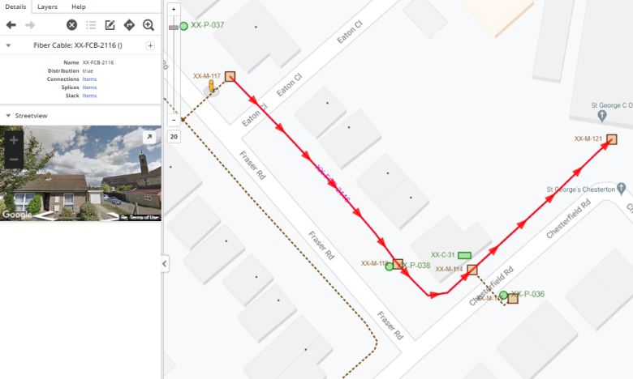

To add a cable:
On the toolbar, click Add Object.
The Add Object dialog opens. The Cables section lists the different types of cables available. These can be fiber, copper or coaxial cables if you have installed the data model templates for these various network technologies, as well as cable types you have configured yourself.
On the map, draw a line between the required start and end structures for the cable path. Ensure that:
you create the cable in the Managing Cable Directions for your system configuration.
the points snap to the structures.
If needed, click Preview. The application automatically finds a path through the route network from the start structure to the end structure (if there is one).
In the example shown below, the user has set the path from manhole XX-M-117 to manhole XX-M-121. The application routes the cable through manholes XX-M-118 and XX-M-114, which forms the shortest path between the two points.

Figure: Cable example
The cable appears in the Cable tree of each structure and route through which it passes.